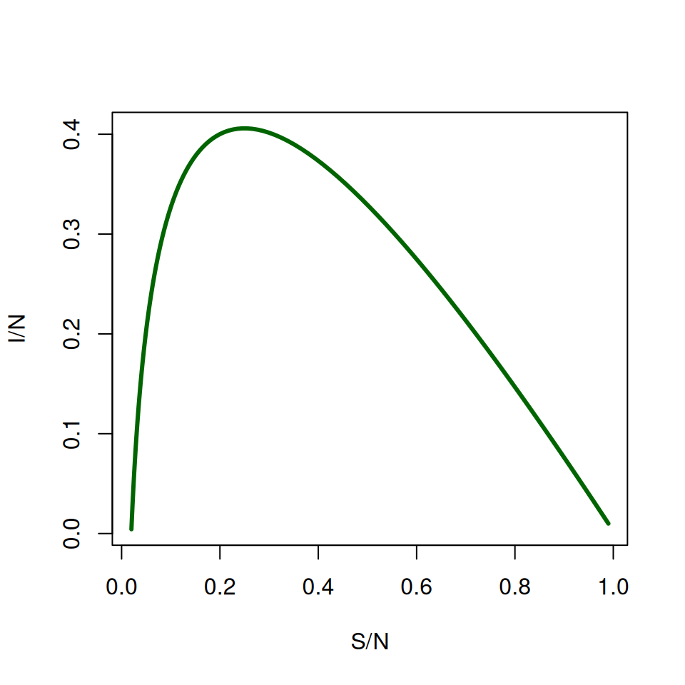
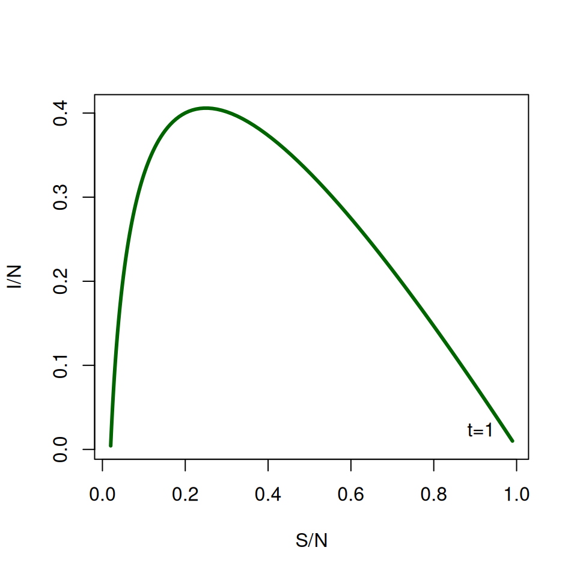

6 Epidemic models—Practical 1
Katy Gaythorpe (k.gaythorpe@imperial.ac.uk)
6.1 The basic \(SIR\) model
6.2 Coding the model
We’ll follow the template for deSolve that we used in the previous practical, starting with the core function that calculates \(dS/dt\), \(dI/dt\) and \(dR/dt\). Open R, create a new text files and type in:
# SIR Epidemic model - Practical 1
library(deSolve)
SIR_dyn <- function(t,var,par) {
# Rename the variables and parameters
S <- var[1]
I <- var[2]
R <- var[3]
N <- S+I+R
beta <- par[1]
gamma <- par[2]
# Derivatives
dS <- -beta*S*I/N
dI <- beta*S*I/N-gamma*I
dR <- gamma*I
# Return the 3 values
list(c(dS,dI,dR))
}REMEMBER TO SAVE YOUR FILE REGULARLY
Note that in this model, the total number of individuals \(S + I + R\) remains constant, so we would actually only need to define 2 variables (say \(S\) and \(I\)) and calculate 2 derivatives. I’ve included the 3 variables for clarity only. Then define parameter values, initial variables values and the vector of time values:
beta <- 1
gamma <- 0.25
SIR_par <- c(beta,gamma)
SIR_init <- c(99,1,0)
SIR_t <- seq(0,30,by=0.1)
# The numerical solution is given by
SIR_sol <- lsoda(SIR_init,
SIR_t,
SIR_dyn,
SIR_par)If you like, you can relabel your variables so that they are easier to use:
time in lower case letters because it is an inbuilt function in R.
plot(), lines() and legend().
You don’t have to always plot things against time, it can also be useful to plot variables against each other. Try plotting \(S\) against \(I\):

It can be difficult to read this graph at first. Find where \(\text{TIME} = 1\) (at the start \(S/N \approx 1\) and \(I \approx 0\)) and label it on the graph.

6.3 Some properties of the model
An important question is when does the epidemic reach its peak? A common misconception based on graphs similar to the one above is “\(I(t)\) reaches its maximum when \(S(t) = R(t)\)”.
By now you know that “\(I(t)\) reaches its maximum when \(dI/dt=0\)”.
- Given that \(dI/dt=\beta SI/N-\gamma I\), when \(I\) is maximum we get \(S/N=\gamma /\beta\).
- Check this relationship using the graph of \(S/N\) plotted against \(I/N\). You might want to use
which.max()which gives the position of the largest element in a vector.
Next, let’s look at the effects of \(\beta\) and \(\gamma\) on the dynamics of the system. In practice, \(\beta\) is usually not known before an epidemic, so its estimated in the early stages of an epidemic using the average infectious period \((1/\gamma)\) and \(R_{0}\). Instead of calculating and plotting a series of dynamics manually, we’ll use a loop to plot 6 graphs in a single window.
| Disease | \(R_{0}\) | Infectious period, \(1/\gamma\) (days) | \(\beta\) | Peak size | Peak time | Epidemic size |
|---|---|---|---|---|---|---|
| Flu (H1N1p) | 1.2 | 1 | ||||
| Flu | 1.5 | 1 | ||||
| SARS | 2.0 | 28 | ||||
| Smallpox | 5.0 | 5 | ||||
| Measles | 17.0 | 7 | ||||
| Pertussis | 17.0 | 14 |
Fill in the blanks and execute the following instructions:
# set up a 2 by 3 grid for the plots:
par(mfrow=c(2,3), xaxs='i', yaxs='i')
# define the parameters:
infperiod <- c(1,1,28,5,7,14)
Rzero <- c(1.2,1.5,2,5,17,17)
for (i in 1:6) {
gamma = signif(1/infperiod[i],2)
beta = signif(Rzero[i]*gamma,2)
SIR_par <- c(beta,gamma)
SIR_sol<-lsoda(SIR_init,
SIR_t,
SIR_dyn,
SIR_par)
plot(....., ylim=c(0,1),type="l", main=paste0("beta = ",beta,"gamma = ",gamma))
lines(.....) # I(t)
lines(.....) # R(t)
}
par(mfrow = c(1, 1))For each combination of parameter values, write down \(\beta\) and read off the approximate values of the height and time of the epidemic peak and the final epidemic size (the total number of individuals that were infected). (Hint: you may have to extend the time period!)
You can also use the functions max() and which.max().
Remember from the lecture that \(R_{0}=\beta / \gamma\), therefore \(\beta = \gamma R_{0}\).
It can be shown mathematically that the epidemic size and the height of the epidemic peak are functions of \(R_{0}\) only, although this requires some clever manipulation of the ODEs (see Appendix at the end of this practical if you’re interested).
The time to the epidemic peak cannot be directly expressed from the equations, but it is linked to the initial rate of spread of the epidemic. The variations in the number of infected individuals are given by: \[ dI/dt = I(\beta S/N-\gamma) \]
At the very beginning of the outbreak, \(I(t) \ll S(t) \approx N\). So we can approximate the ODE above as \(dI/dt = (\beta - \gamma )I\), which can be solved as: \[ I(t) = I_{0} \exp([\beta - \gamma]t) \]
So the number of infected individuals initially follows an exponential growth with rate \[ \beta N - \gamma = \gamma (R_{0} - 1) \]Plot \(\log(I(t))\) for \(t\) in \([0,4]\) for the same parameter combinations above and check that the initial gradient is equal to \(\beta - \gamma\).
abline again, this time to impose a straight line \((y = bx + c)\).
6.4 Calculating the infectious period
For a given constant recovery rate of \(\gamma = 0.2\) days\(^{-1}\) we can plot the proportion of individuals still infected over time.
We can also calculate the average infectious period using the function defined above.
6.5 Optional section—extending \(SIR\) to other compartments
As we saw in the lecture, the \(SIR\) framework is only a crude representation of the real natural history of a disease. Think of another formulation and see how the results compare to a standard \(SIR\) model. Some suggestions:
- Include loss of immunity, so that Recovered individuals become Susceptible again after a certain period of time.
- Include a latent state post-infection but before an individual becomes infectious (this type of model is often called an \(SEIR\) model, where \(E\) stands for the Exposed class).
- Include treatment in the model, allowing Infected individuals to recover more quickly.
- Sketch a diagram of your model, showing the compartments and the flows between them.
- Write down the equations that govern your model
- Write a function, such as
SEIR_dyn()that calculates the derivatives of your model for use withlsoda(). - Plot the epidemic curve, \(I(t)\). How does this compare to an equivalent \(SIR\) model?
6.6 Appendix—Epidemic peak and final epidemic size
Although it is not possible to solve the differential equations of the \(SIR\) system analytically to obtain expressions for \(S(t)\), \(I(t)\) and \(R(t)\), we can obtain an implicit solution in the \((S,I)\) phase plane. In other words, we can obtain a mathematical relationship between the values of \(S\) and \(I\) at any time point. The trick is to re-write the system
\[ \begin{aligned} \frac{dS}{dt} &= -\beta SI/N \\ \frac{dI}{dt} &= \beta SI/N - \gamma I \end{aligned} \]
as a single differential equation for \(I\) as a function of \(S\). Under certain mathematical conditions that we won’t discuss here, the variations of \(I\) with respect to \(S\) can conveniently be written as:
\[ \frac{dI}{dS} = \frac{dI/dt}{dS/dt} = \frac{\beta SI/N - \gamma I}{-\beta SI/N} = \frac{\gamma N}{\beta S} - 1 \]
Using the integration rules from the maths lectures, we can actually solve this ODE:
So, given the initial conditions, we can deduce the value of \(I(t)\) from the value of \(S(t)\) at any time point. How is that helpful? First consider the question of the height of the epidemic peak. We know that \(I(t)\) reaches its maximum when \(S(t) = \gamma/\beta\). Hence the height of the epidemic peak:
\[ I_{\mathrm{max}} = I_{0} + \frac{\gamma}{\beta} \log \left(\frac{\gamma}{\beta S_{0}}\right) + S_{0} - \frac{\gamma}{\beta} \]
Assuming that \(I(0) \ll S(0) \approx N\), then we can write \(R_{0}\approx\beta S(0)/\gamma\), hence:
\[ I_{\mathrm{max}}/N \approx 1-(1+\log R_{0})/R_{0} \]
You can check it on the graphs from section 2 above. Next, the final epidemic size is given by the final value of \(S(0) - S(t)\), i.e. taking \(t \rightarrow \infty\). Under the same assumptions as above, and letting \(x = S(0) - S(\infty)\) be the proportion of the \(N\) population that gets infected over the whole epidemic, we get the following equation: \(x + \log(1 - x)\), which can only be solved numerically.
R does not have a built-in numerical solver for nonlinear equation, but it has a function called optimize() that searches for the minimum of a numerical function. The trick is to notice that solving an equation of the form \(f(x) = 0\) is equivalent to finding the minimum of \(f^{2}(x)\), the square of \(f(x)\). If you’re not convinced, sketch a graph of an arbitrary function that crosses the x-axis, then sketch the square of that function.
We can therefore estimate the epidemic size for any value of R0 using the following code:
where the three arguments of optimize are:
- the function to minimize with respect to its first argument (in this case \(x\)),
- the interval over which to search for a solution
- the numerical values of any other argument of
my_fun(in this case \(R_{0}\)).